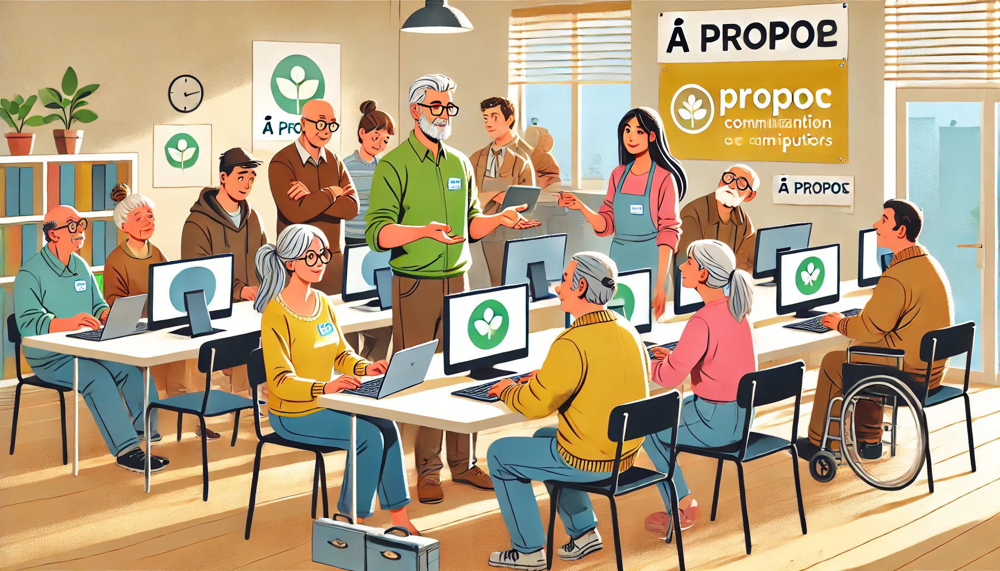

Aide aux particuliers
.png)
Notre service d'aide aux particuliers est conçu pour fournir un soutien informatique personnalisé. Que vous ayez des difficultés avec votre ordinateur, des questions sur l'utilisation d'un logiciel ou besoin d'aide pour résoudre des problèmes techniques, notre équipe est là pour vous aider. Nous offrons des séances individuelles pour répondre à vos besoins spécifiques et vous aider à devenir plus à l'aise avec la technologie.
Un service gratuit
Chez Informatik'Mans, nous croyons que l'accès à l'assistance informatique ne devrait pas être limité par des contraintes financières. C'est pourquoi nous offrons tous nos services gratuitement. Que vous ayez besoin d'aide pour configurer votre ordinateur, apprendre à utiliser un nouveau logiciel ou résoudre des problèmes techniques, nos experts sont là pour vous assister sans frais.
Apprentissage

Notre service d'apprentissage est dédié à vous aider à développer vos compétences informatiques. Nous proposons des ateliers et des cours sur une variété de sujets, allant des bases de l'informatique à des compétences plus avancées comme la programmation ou la cybersécurité. Nos formateurs expérimentés sont là pour vous guider à chaque étape et vous fournir les connaissances nécessaires pour maîtriser les outils technologiques.